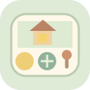

شيء صغير تحرّكه… وعالم يتغير
حديقة العجائب
استكشف على راحتك
نشاهد مثالًا
جرّب بيدك

كل تجربة تحفظ حالتها. يمكنك الرجوع إليها في أي وقت.
ابدأ بزر واحد للصغير وسمِّ ما تغيّر أمامه. ارفع المستوى بحسب استعداده. في المهمات نبحث عن حالة المشهد المطلوبة، ويمكن التجربة بأي ترتيب. الشريك الثاني ضيف يتناوب على الجهاز نفسه.